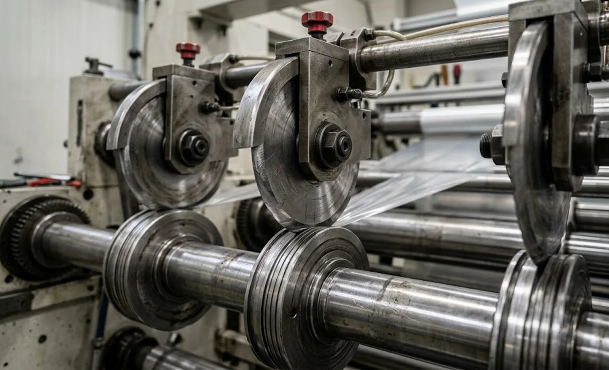
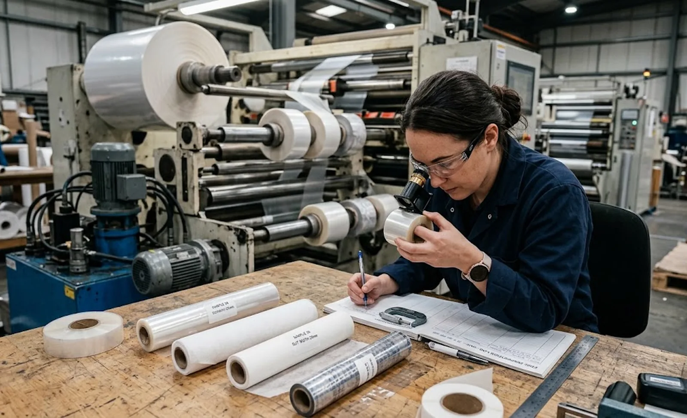

Published October 2, 2026 | By HDPTH Technical Editorial Team

Buyers usually specify the slitting method — razor, shear or score — and stop there. Yet two machines set up for the same method can produce visibly different edges, because blade geometry was never specified. A shallow-bevel shear knife glides through soft film but chips on filled nonwoven; a pointed razor cuts meltblown cleanly but survives only a shift on a mineral-filled web. Blade geometry is where material knowledge, machine design and running cost meet — it belongs in the purchase specification. For cost modelling, combine it with our knife life and consumables cost guide.
Shear slitting: bevel angle, clearance and overlap
In shear slitting, the geometry triangle is bevel angle, clearance and overlap. The bevel angle controls how the cutting force is distributed: a shallow bevel — roughly 15 to 20 degrees — presents a fine edge suited to films, thin nonwovens and soft webs, but it dulls faster and is more fragile. A steeper bevel — 25 degrees and above — gives a tougher edge for paper, board, laminates and abrasive materials such as glass fibre, at the cost of higher cutting force. Bevel is also specified per side: single-bevel knives cut with less sideways force; double-bevel knives are easier to regrind and more tolerant in general converting.
Clearance and overlap interact with the bevel: a shallow-bevel knife wants less overlap and a tighter clearance band, with the bottom-band diameter keeping support where the edge needs it. The right question for a vendor is not “what blades do you supply?” but “what bevel angle, band diameter and clearance window do you recommend for this material, and what blade life have you documented?”
| Material family | Preferred method | Typical geometry starting point |
|---|---|---|
| Films (PE, PET, BOPP) | Shear or razor | Shear bevel 15–20°; pointed/bevel-tip razor, honed edge |
| Spunlace / light nonwovens | Shear or razor | Shear bevel 18–22°; trumpet-tip razor, anti-pickup coating |
| Paper and board | Shear | Shear bevel 20–25°, double bevel, wear-resistant steel |
| Abrasive webs (glass fibre, mineral-filled) | Shear or score | Bevel 25°+, carbide-tipped or hardened knives; hardened score knife |
| Laminates and coated composites | Shear | Steeper bevel, wider clearance window; trial-verify against delamination |
Razor slitting: tip profile, edge finish and material
Razor geometry starts with the tip. A pointed tip minimises cutting force and suits very light films, but the thin edge is short-lived and tension-sensitive. A bevel-tip or trumpet-tip blade puts more metal behind the edge: slightly higher cutting force, but substantially longer life — the practical default for general converting. Beyond the profile, the edge finish matters: honed edges cut cleaner and reduce fuzzing, while low-friction coatings reduce heat and tacky build-up on coated webs. Blade material completes the decision: carbon steel is sharp and cheap but dulls fastest, stainless resists corrosion, and ceramic or carbide edges deliver several times the life on abrasive webs at higher price. Where dust is a concern on coarse nonwovens, ask whether a fluted edge reduces it, combined with dust extraction system.
Score slitting and the geometry of the anvil cut
Score slitting presses a knife against a hardened anvil roll, crushing through the web. Its geometry decisions are the knife section (narrow cuts cleaner but wears fast; wide lasts longer but dusts more), the edge bevel and the anvil condition itself. Score slitting remains the pragmatic choice for abrasive, elastic or hard-to-hold materials where a shear set-up would be unstable, and it tolerates web wander far better. If your product tolerates a slightly rounded edge and dust is managed, score geometry can be the lowest-cost-per-slit option — verify with a trial rather than assuming.

Making geometry part of the purchase contract
Convert blade geometry from a commissioning detail into a contractual deliverable in three moves. First, require cutting trials on your material during the material trial or FAT, with at least two geometry alternatives compared and the edge quality documented. Second, list the recommended geometry per material family — bevel angle, blade material, coating, clearance window — in a specification annex, so the knowledge survives personnel changes. Third, price the consumables: standard blade sizes are affordable for decades; proprietary geometries tie you to one source. A confident supplier will agree to all three without hesitation. Complement this with the automatic blade changing options if you run frequent width changes.
Need a slitting set-up matched to your material?
HDPTH specifies shear bevel angles, razor profiles and score knife sections from documented cutting trials, and supports customer material tests before order. Send your material and target widths for a geometry recommendation with your quotation.
Request a Cutting Trial QuoteQuestions to put to every vendor
- Which bevel angles, blade materials and coatings do you recommend for our material, and what blade life is documented with that geometry?
- Will you run a comparative cutting trial with two geometry alternatives during FAT, with edge quality recorded?
- Are the recommended blades standard industry sizes, and what are the price and delivery terms for replacements?
- Can the knife holders accept alternative blade diameters and carrier types if we change materials later?
Frequently asked questions
What does blade geometry mean on a slitter rewinder?
Blade geometry covers the shape and edge of the cutting tool: the bevel or rake angle of a shear knife, the tip profile and edge of a razor blade, the section and bevel of a score knife. Geometry determines the cutting force on the web, the edge quality at a given speed, edge life and set-up sensitivity to clearance and overlap errors. Two machines of identical build can produce different edge quality purely because of the blade geometry fitted.
How do I choose the bevel angle of a shear slitting knife?
A shallow bevel cuts with less force and suits films, thin nonwovens and soft webs, but dulls quickly. A steeper bevel is more robust and keeps its edge longer, suiting paper, board, laminates and abrasive webs. As a starting band, soft films use bevels around 15 to 20 degrees, papers 20 to 25 degrees, and abrasive or thick materials 25 degrees and above. Confirm the choice with cutting trials on your own material, as adhesive, coating and lamination shift the optimum.
Which razor blade profile should I use for slitting film and nonwovens?
A pointed-tip razor suits light films and nonwovens where minimal cutting force matters. A bevel-tip or trumpet-tip blade has more metal behind the edge — longer life for a moderate increase in cutting force, the usual general-converting default. Coated or honed-edge variants reduce friction and fibre pick-up on tacky webs. For melt-blown and coarse nonwovens, check whether a fluted edge reduces dust. Blade material matters as much as profile: carbon steel dulls fastest, stainless resists corrosion, ceramic and carbide edges last longest but cost more and chip under impact.
When is score slitting the right choice despite dust concerns?
Score slitting — cutting the web against a hardened anvil roll — suits abrasive, elastic, laminated or hard-to-hold materials when a slightly rounded, dustier edge is acceptable. It tolerates web wander far better than shear slitting and needs no top knife alignment, making it forgiving on coarse nonwovens and puncture-resistant films. The trade-off is crush dust and a less clean edge, so pair score slitting with dust extraction and specify the knife section: a narrow-section score knife cuts cleaner but wears faster.
What should I ask a slitter rewinder vendor about blade geometry?
Ask which blade geometries are standard for your material, and whether the supplier will run cutting trials with two or three alternatives before you order. Ask for the recommended bevel angle, blade material and coating for your web, the clearance and overlap range for each bottom-band diameter, and documented blade life on comparable materials. Ask whether the knife holders accept different blade diameters and carriers without replacing the slitting section. And confirm pricing and delivery for spare blades — geometry you cannot affordably re-order is geometry you will not maintain.
Sources
- ISO 13399 series: cutting tool data representation — the structured way cutting geometry is specified
- ASTM F2490: standard guide for nonwoven machine documentation practices relevant to trial records
- ISO 9001 (2015 edition page): documenting process parameters such as blade geometry in the QMS
- ASTM D882: tensile properties of thin plastic sheeting — material data that informs blade choice